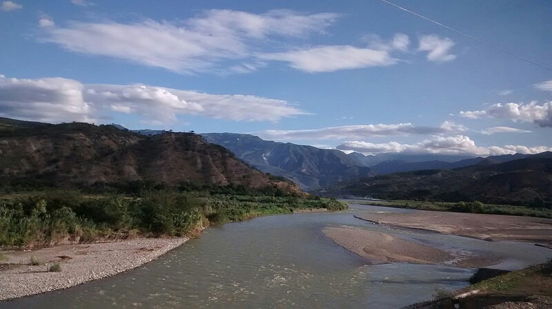

Presenta un clima cálido que se localiza en la parte baja con valles interandinos entre las quebradas de quismache y manta, y a orillas del rio Huancabamba. Por la parte alta , un clima frio - húmedo en la mayoria de caserios , ademas se registra una estación lluviosa que se inicia en el mes de octubre, con declimaciones en el mes de diciembre y continua con mayores registros entre los meses de enero y abril; presentandose una estación de verano de mayo y junio, de Julio a agosto una estación mas seca; las precipitaciones minimas es de 620 a 1350 m por año.
